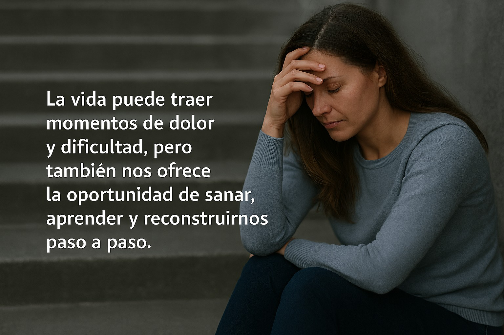
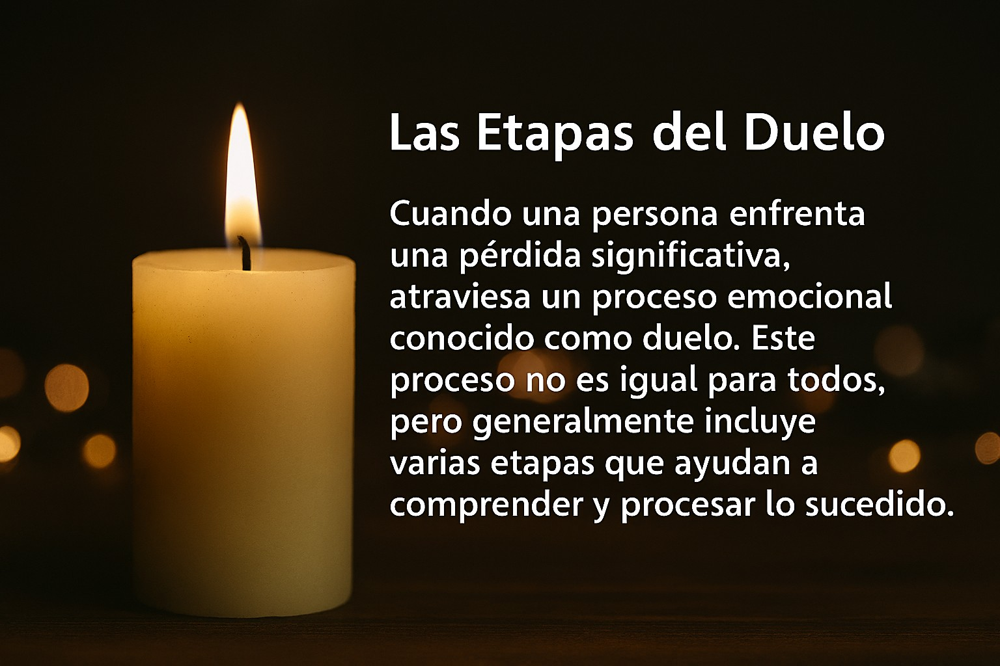
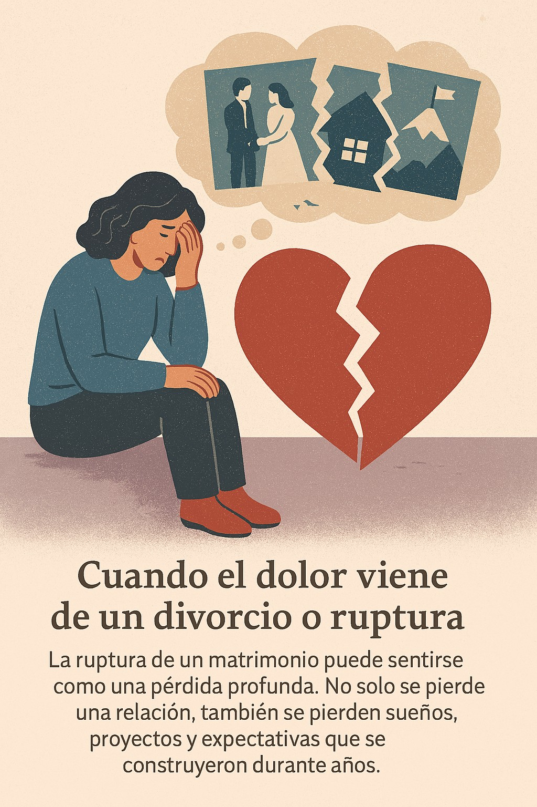

Un espacio para quienes atraviesan momentos difíciles y buscan esperanza
La vida a veces nos coloca en situaciones muy difíciles: enfermedades, pérdidas, problemas económicos, o la ruptura de una relación o matrimonio que pensábamos duraría toda la vida. Estas experiencias pueden generar dolor profundo, confusión, tristeza y sensación de vacío.
Sin embargo, estos momentos también forman parte del proceso humano de transformación. Aunque el dolor sea real, también existe la posibilidad de sanar, aprender y reconstruir nuestra vida paso a paso.

Cuando una persona enfrenta una pérdida significativa, atraviesa un proceso emocional conocido como duelo. Este proceso no es igual para todos, pero generalmente incluye varias etapas que ayudan a comprender y procesar lo sucedido.
La negación es una reacción natural ante el impacto de una pérdida o cambio doloroso. En esta etapa la mente intenta protegernos del sufrimiento inmediato.
Las personas pueden sentir que lo ocurrido no es real o que se trata de un malentendido. Es común escuchar pensamientos como:
La negación permite que el cerebro procese la situación gradualmente y evita que el dolor emocional sea demasiado intenso de golpe.
Después de aceptar parcialmente lo sucedido, puede aparecer la ira. Esta emocionalidad puede dirigirse hacia muchas personas o situaciones:
Sentir enojo no significa que una persona sea mala o débil. Es simplemente una forma de expresar el dolor profundo que existe dentro del corazón.
En esta etapa las personas intentan encontrar maneras de revertir lo ocurrido o imaginar diferentes escenarios donde las cosas hubieran sido distintas.
Aparecen pensamientos como:
Es una etapa donde la mente intenta recuperar el control de la situación.
Cuando la realidad comienza a aceptarse profundamente, puede aparecer una tristeza intensa. Esta etapa puede incluir:
Aunque esta etapa es dolorosa, también es una de las más importantes porque permite procesar verdaderamente la pérdida.
La aceptación no significa olvidar lo ocurrido ni dejar de sentir tristeza. Significa aprender a vivir con la nueva realidad y comenzar a reconstruir la vida.
En esta etapa muchas personas comienzan a recuperar la esperanza, encontrar nuevos propósitos y descubrir una nueva fortaleza interior.

La ruptura de un matrimonio puede sentirse como una pérdida profunda. No solo se pierde una relación, también se pierden sueños, proyectos y expectativas que se construyeron durante años.
Es normal experimentar sentimientos como:
Sin embargo, muchas personas que atraviesan este proceso descubren con el tiempo una nueva etapa de crecimiento personal y espiritual.

La sanación emocional no ocurre de un día para otro. Es un proceso gradual que requiere paciencia, reflexión y cuidado personal.
Cada paso, por pequeño que parezca, es un avance hacia la recuperación.
Aunque hoy el camino parezca oscuro, la vida siempre tiene la capacidad de renovarse. Muchas personas que han atravesado momentos extremadamente difíciles descubren después que esas experiencias los transformaron y los hicieron más fuertes.
Tu historia no termina en el dolor que hoy estás viviendo. Todavía hay capítulos que escribir, caminos que recorrer y personas que conocer.